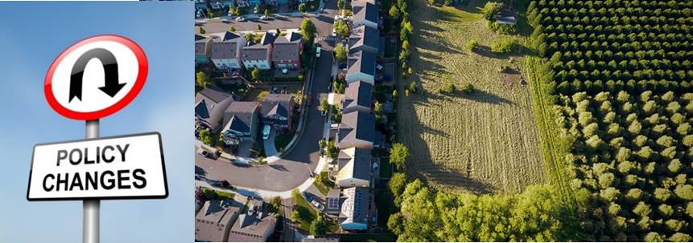
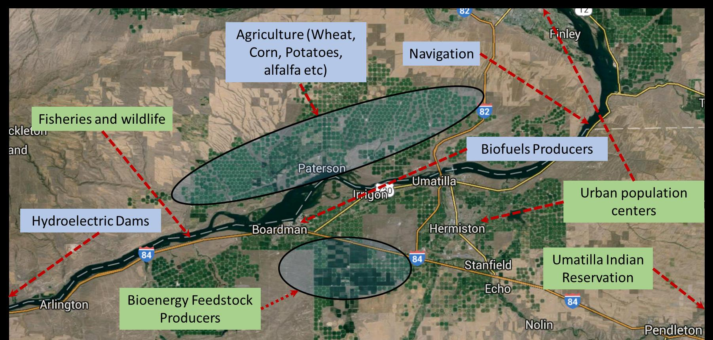

InterACTWEL
Interactive Adaptation and Collaboration Tool for managing Water, Energy and Land

Created by Majid Farahani From Oregon State University,2017
InterACTWEL
Unexpected changes and disturbances can threaten consistent availability and quality of shared natural resources (e.g., water, energy, and land)


InterACTWEL is a computer-aided decision support tool that is being developed to empower land, water,
energy managers and food producers to envision and plan towards a resilient future for their local
communities.
Unlike other tools that focus on the short-term decision-making, InterACTWEL will help communities
identify decisions for long-term adaptation to changes that they do not have control of, such as a
severe water restriction or changing state laws.
To make this tool successful, we need to hear from water, energy managers, and food producers
about their current and future management concerns and the types of information needed to make more
informed management decisions and long-term plans.
Because natural resources are limited, many communities need assistance to effectively coordinate demand, allocation and efficient use of water, energy and land. Coordination among stakeholders is especially critical when resource availability and quality is threatened. Stakeholders may include those whose livelihoods depend on food and energy production, as well as availability of water for consumptive uses (e.g., industry, agriculture, drinking water) as well as non-consumptive uses (e.g., fisheries, ecosystem maintenance, recreation, navigation, hydropower, cultural preservation). Food-Energy-Water (FEW) actors often include farmers, tribes, water managers, dam operators, industries, recreationalists, government agencies and environmentalists. InterACTWEL is a computer-aided decision support tool that empowers FEW actors to envision and plan towards a resilient future for their local communities. Unlike other tools that focus on the short-term decision-making, InterACTWEL in a long-term planning tool that help communities be more resilient to changes that they do not have control of, such as a severe water restriction or changing state laws. Whenever there is an environmental disturbance (e.g., extreme floods, droughts, groundwater declines, fish diseases) or when there are new agricultural or environmental policies, FEW actors can use InterACTWELs intuitive interfaces to examine how these factors will affect their goals, operations and livelihoods. The scientific models in InterACTWEL allow individual actors to identify potential adaptation strategies from a wide range of management choices available to them, while also enabling them to learn about how their decisions affect other FEW actors. With InterACTWEL local communities of FEW actors can increase their overall capacity to adjust their operations through time, for uncertain and adverse stresses affecting the environment or the economy. Anyone can use and access InterACTWEL; the data-secure tool is easy to navigate and can run on either a desktop or mobile application. How it works: InterACTWEL goes well beyond just being a web-based platform to share data and information among FEW actors in a local region. The system contains advanced scientific models and interactive optimization algorithms that can quickly synthesize and leverage the collective wisdom of FEW actors. The algorithms help identify potential adaptation strategies, while also meeting environmental, economic and social sustainability goals.
Actors
InterACTWEL allows FEW actors to upload and connect their own trusted scientific models such as hydrologic, economic or crop growth models for analyses of their sector. If a FEW actors model is overly complex, then users can upload results from their own simulation models via a graphical user interface. The machine-learning algorithms in InterACTWEL will then create fast surrogate models to represent the FEW actors system in the adaptation planning framework. InterACTWEL is highly flexible. It allows individuals and groups to modify the decisions proposed by the optimization algorithms while also accepting new information at any time. If FEW actors are unsatisfied with the scenarios for water and natural resource use that InterACTWEL provides, then they can modify the scenarios, and the tool will adapt to the new preferences. All of this is accomplished in a secure and trusted cyber environment. If a FEW actor is considering a potential strategy, it can be kept private and not shared with other users. InterACTWEL is funded by the U.S. Department of Agriculture (USDA) National Institute of Food and Agriculture (NIFA) via an interagency partnership between the National Science Foundation (NSF) and USDA-NIFA.

InterACTWEL
InterACTWEL aims to help land, water, energy managers, and food producers identify long-term management options that respond to potential threats, and empower coordination of management efforts
Water Food Energy
Hover on the Facebook icon
Why Thousands Are Facebook "Checking In" At Standing Rock, ND from Youtube.
A secure decision support system for coordination of adaptation planning among Food, Energy, and Water actors in the Pacific Northwest
Download Storymap.js from https://github.com/majidrezafarahani/InterACTWEL_Storymap

Created by Majid Farahani From Oregon State University